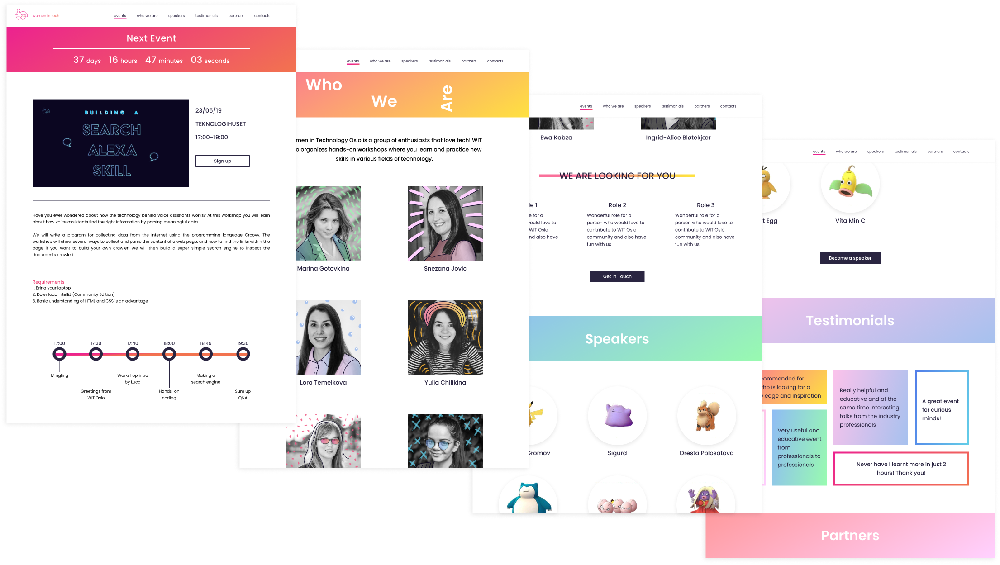

Graphic design
Women in Tech Oslo
Women in Technology Oslo is a group of enthusiasts that love tech!
WIT Oslo organizes hands-on workshops where participants learn and practice
new skills in various fields of technology.
I joined WIT Oslo at the moment when this community was very young and there were
only 3 more girls driving it. My goal was to create a playful logo that represents
the community and is easy to recognize and remember.
After finalizing the concept of the logo, I placed it on 4 backgrounds - different
color for each season (or mood) - to add playfulness to social media pages and merch products.
Special occasions
Error 404
Pride edition
Website design
After research I ended up with a single page
layout. The purpose of the WIT is organizing tech events and
attracting new curious people, so next event section comes first on the site,
followed by secondary information about the community.
Single page site has several advantages, including more intuitive user flow,
lighter interface and clear information architecture.


Designed & developed by Yulia Chilikina